El recorrido · ecosistema, SDD y colección de skills
Ecosistema / Qué estamos construyendo
Jarvis Dev: el contexto también es infraestructura.
Un ecosistema para desarrollar con IA sin empezar de cero en cada sesión: instala y configura herramientas, conserva conocimiento y guía cambios desde la intención hasta la verificación.
Jarvis CLI · preparar y guiar
Instalación y comandos de entrada; configuración de Claude Code y OpenCode en v1, modelos por fase, flujo SDD y distribución de la colección de skills.
Hive · recordar en local
hive-daemon sirve memoria de proyecto en SQLite. Recupera contexto registrado incluso sin conexión al servicio compartido.
Hive Cloud / Hive API · compartir
El mismo conocimiento puede llegar al equipo mediante sincronización configurada. «Cloud» nombra la capa compartida; disponibilidad y garantías dependen de su despliegue.
Nexus Hive · ver y administrar
Dashboard de la memoria compartida en Hive API. No abre directamente tu SQLite local ni controla tu daemon.
Hive local / Recuperar detalles que ya registramos
«¿Cómo hicimos en SNG
el histórico salarial?»
Tu jefa pregunta por aquel cambio. Recuerdas lo básico: conservamos los salarios anteriores y sus periodos de vigencia. Los nombres de funciones y campos, no tanto.
Se lo preguntas al agente. Recupera el contexto registrado: activateDeactivateSalary.dg, el módulo salary y los campos que delimitan cada periodo.
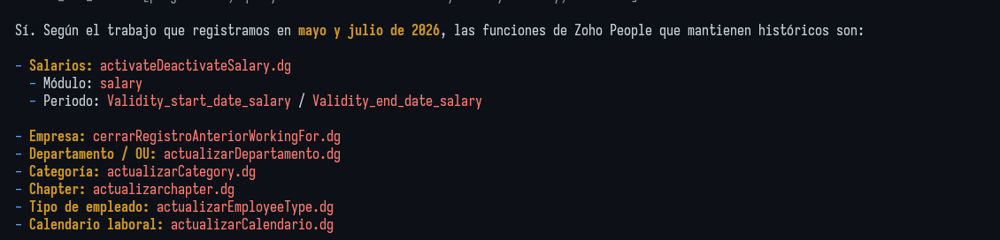
La continuidad depende de lo registrado
El agente recupera las memorias relevantes de Hive; no hace falta buscar cada día a mano en un dashboard. El daemon conserva memoria en SQLite local y puede trabajar sin Hive API. No ingiere todo el código ni reconstruye detalles que nunca se guardaron.
Guía de Hive localHive Cloud / Historia ilustrativa propuesta por el equipo
Las remesas de Portic.
Y Fran en el Resurrection Fest.
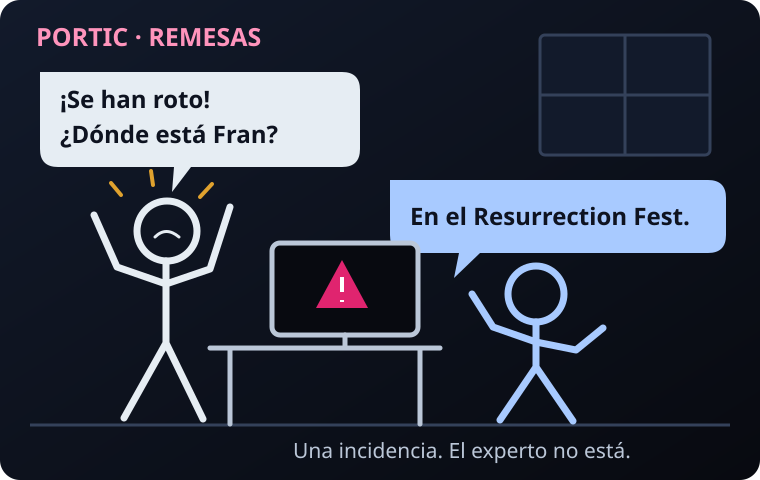
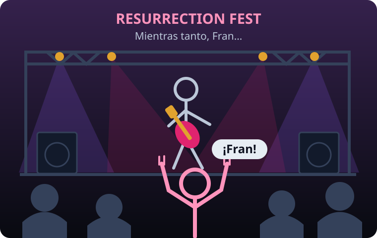
«Pidamos al agente las causas y soluciones que dejamos registradas».
Si las notas de Fran se sincronizaron con la memoria compartida, el equipo puede recuperarlas con el agente, localizar código y pruebas y contrastar el fallo actual. Son pistas para investigar, no una reparación automática.
Lo que debe estar preparado antes
Hive API disponible, endpoint y credenciales configurados fuera de Git, daemon reiniciado tras cambios y proyecto autorizado para compartir. Sync manual mediante mem_sync; el fondo automático requiere habilitación explícita. Solo se recupera lo registrado y sincronizado.
Es una historia ilustrativa aportada por el usuario, sin datos de cliente, payloads reales ni tiempos de resolución.
Guía de sincronización de memoriaNexus Hive / Ver y administrar conocimiento compartido
La memoria del equipo,
a la vista.
Administrar la memoria compartida: observar su actividad, inspeccionar proyectos y cuidar quién participa.
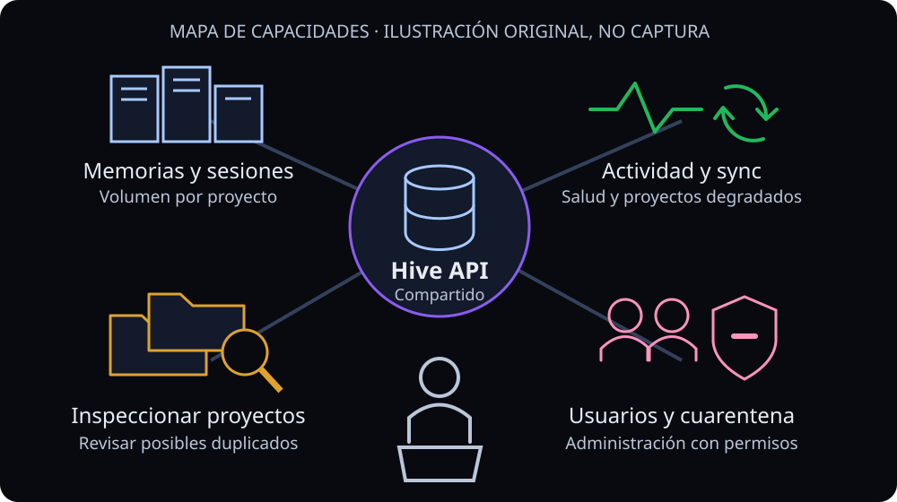
Resumen de memorias y proyectos activos; memorias, sesiones y última actividad por proyecto. La vista administrativa añade usuarios sincronizando, proyectos degradados, crecimiento del conocimiento y salud de sincronización.
Supervisión, no limpieza automática
Inspeccionar proyectos permite revisar posibles duplicados. Nexus no ofrece fusión o borrado web de proyectos ni detección o deduplicación automática. Usuarios y cuarentena requieren permisos; poner un proyecto en cuarentena exige motivo y confirmación de su clave canónica.
Es Hive API lo que ves: el dashboard no administra directamente el SQLite de tu portátil ni arranca tu daemon local.
Despliegue y límites
Interfaz opcional servida por Hive API con assets configurados, autenticación y controles de acceso adecuados. La disponibilidad compartida depende del despliegue; la resiliencia offline corresponde al Hive local.
Guía del dashboard · Seguridad y privacidadEcosistema / Jarvis CLI
Una entrada común.
No un ritual de copiar prompts.
Instalar, configurar y gestionar
jarvis abre la interfaz interactiva para instalar, configurar y gestionar el ecosistema.
Modelos por fase, integración de memoria, instrucciones y skills desde fuentes versionadas, preservando claves del usuario mediante merge.
Guiar, no decidir por ti
Claude Code y OpenCode v1 reciben una base coherente. El equipo sigue eligiendo alcance, modelos, contexto que registra y qué comparte.
Las fases SDD no son una promesa de autonomía sin revisión.
Una elección visible: local o local + cloud
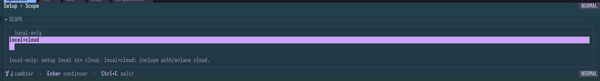
SDD / Un caso, nueve fases
«Generar factura desde
la oportunidad del CRM».
No vamos a construir «solo un botón». Vamos a acordar qué significa facturar y cómo demostrarlo.
Las preguntas de negocio
¿Cuándo se puede facturar? ¿Qué datos fiscales y líneas son obligatorios? ¿Quién decide impuestos y redondeo? ¿Quién tiene permiso?
Las preguntas que evitan sustos
¿Qué pasa al pulsar dos veces? ¿Y si la API falla o devuelve timeout después de crear? ¿Cómo conciliamos antes de reintentar?
Init → Explore → Proposal → Spec → Design → Tasks → Apply → Verify → Archive.
Recorrido didáctico: reglas y artefactos de ejemplo, no requisitos aprobados de un cliente ni contratos inventados de Zoho.
SDD / Decisiones antes de arrancar
El plan no vive solo en el chat.
Activación deliberada
El preflight acuerda almacenamiento, modo de ejecución y estrategia de entrega. En modo interactivo, Proposal abre preguntas y confirma respuestas; en auto omite esa ronda.
Automatizar fases no elimina las decisiones pendientes ni los límites de escritura.
Cuatro modos de artefactos
hive: por defecto, artefactos en Hive.openspec: archivos de proyecto.hybrid: ambos, coherentes.none: resultado inline, sin persistencia SDD.
El binding persistido por proyecto/cambio no se cambia silenciosamente. Una divergencia hybrid bloquea; no gana la copia «más cómoda».
SDD / Init · calibrar el proyecto
Antes del plano,
mira el terreno.
SDD Init detecta stack, arquitectura, convenciones y capacidades de pruebas reales.
En nuestra facturación
Localizar integración CRM, servicio de facturación, tests y comandos existentes. Si es Laravel, detectar PHPUnit en vez de inventar un runner.
Output: contexto de proyecto, capacidades de testing y .jarvis/skill-registry.md; en OpenSpec, bootstrap/configuración.
Valor y razón de diseño
Evita diseñar para un proyecto imaginario. Sus instrucciones exigen detectar, no adivinar, y guardar las capacidades para las fases posteriores.
Strict TDD se resuelve desde configuración; sin marcador pero con runner, se activa por defecto. Sin runner, se explica su ausencia.
Fuente · SDD Init · Core · fase canónica 1/9.
SDD / Explore · investigar sin implementar
¿Cuándo una oportunidad
es facturable?
SDD Explore lee código, compara opciones y revela restricciones antes de comprometer alcance.
Preguntas de nuestro caso
¿Disparo manual o por estado? ¿Dónde están los datos fiscales? ¿Hay función estándar compatible? ¿Qué falla hoy?
Output: explore.md para el cambio nombrado: estado actual, áreas afectadas, alternativas, recomendación y riesgos.
Valor y razón de diseño
Nos permite descubrir que faltan datos antes de escribir 1.000 líneas. La skill prohíbe modificar código y pide reconocer información insuficiente.
La exploración puede recomendar un borrador manual como primer alcance, pero esa decisión debe acordarse.
Fuente · SDD Explore · Core · fase canónica 2/9.
SDD / Proposal · acordar el porqué y el alcance
Facturar sí.
Rehacer contabilidad, no.
En modo interactivo, SDD Propose abre una o más rondas de preguntas: tus respuestas afinan requisitos y límites hasta acordar una propuesta documentada.
Propuesta ilustrativa
Crear un borrador bajo acción autorizada, con datos validados y control de duplicados. Fuera: envío automático, cobros y migración histórica.
Output: proposal.md: capacidades nuevas/modificadas, impacto, riesgos, dependencias, rollback y éxito observable.
Valor y razón de diseño
Da un contrato a Spec y evita el «ya que estamos». Sus instrucciones obligan a declarar exclusiones, rollback y criterios de éxito.
En modo auto no hace esas rondas interactivas. Las incógnitas no se convierten por ello en hechos verificados.
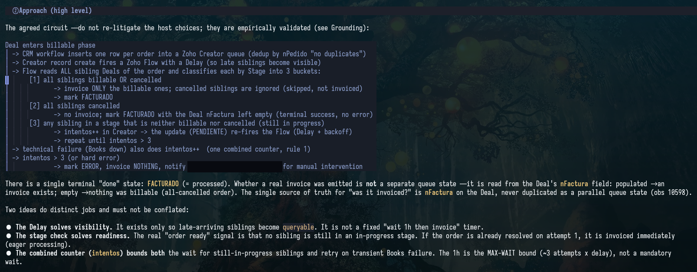
Fuente · SDD Propose · Core · fase canónica 3/9.
SDD / Spec · definir comportamiento observable
«Funciona» necesita
un entonces.
SDD Spec escribe requisitos y escenarios Given / When / Then, no detalles de implementación.
Escenarios del ejemplo
Dado un borrador ya asociado a la oportunidad, cuando se repite la petición, entonces se recupera el existente sin duplicarlo.
Otros escenarios: datos fiscales ausentes, permiso denegado, redondeo según regla acordada y fallo de API sin falso éxito.
Output, valor y razón
Specs de dominio, nuevas o delta: ADDED / MODIFIED / REMOVED / RENAMED. Cada requisito tiene escenarios comprobables.
Existe para separar el qué del cómo. Exige caminos felices y errores; un MODIFIED conserva el bloque completo para no perder escenarios al archivar.
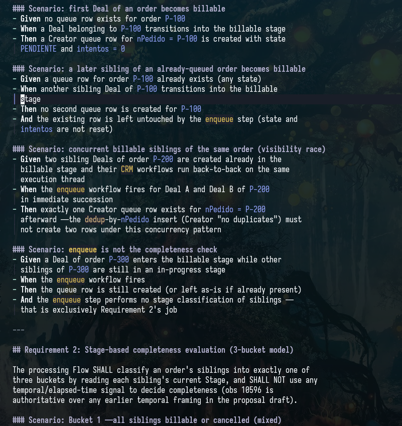
Fuente · SDD Spec · Core · fase canónica 4/9.
SDD / Design · decidir cómo y explicar por qué
Un timeout no autoriza
otra factura.
SDD Design define arquitectura, flujo de datos, contratos, archivos y estrategia de pruebas.
Diseño ilustrativo
Separar validación, generación y adaptador externo. Mantener una referencia estable por oportunidad y conciliar un resultado incierto antes de reintentar.
Elegir cómo asegurar idempotencia según contratos comprobados del sistema real; no asumir que la API la ofrece.
Output, valor y razón
design.md: decisiones y alternativas, flujo, cambios concretos, pruebas y rollout.
Reduce improvisación durante Apply. La skill exige leer el código existente, justificar cada decisión y señalar preguntas bloqueantes en lugar de resolverlas por imaginación.
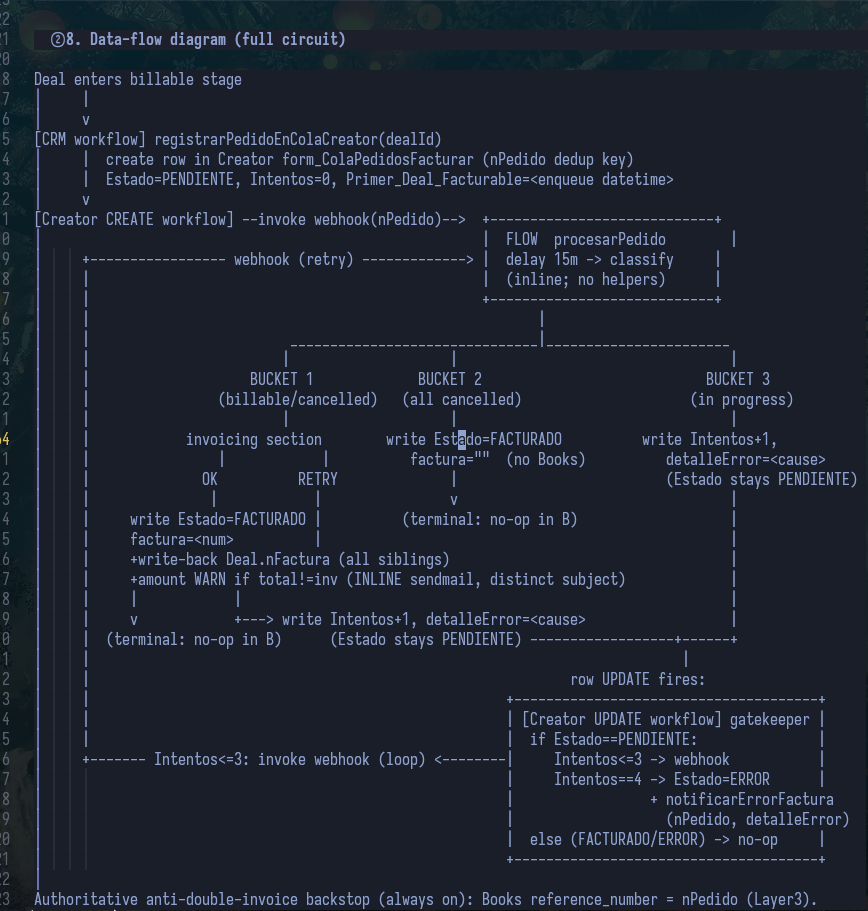
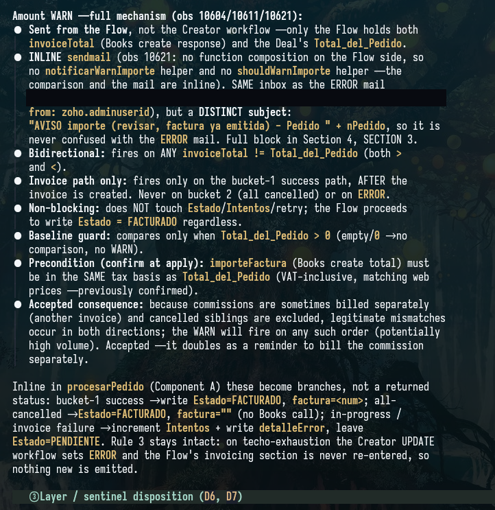
Fuente · SDD Design · Core · fase canónica 5/9.
SDD / Tasks · convertir diseño en unidades revisables
«Implementar facturas»
no es una tarea.
SDD Tasks crea un checklist concreto, ordenado por dependencias y verificable.
Tareas del ejemplo
- Validación de oportunidad y datos, con casos de rechazo.
- Generación de borrador y cálculo acordado, con tests.
- Control de duplicados y recuperación del fallo externo.
- Acción autorizada en CRM, pruebas integradas y guía de uso.
Output, valor y razón
tasks.md y previsión de carga de revisión: líneas estimadas, riesgo, unidades y estrategia de entrega.
Existe para que un humano pueda revisar entregas completas. Si se prevé superar unas 400 líneas cambiadas, pide cadena o excepción aceptada, no troceado ciego.
Fuente · SDD Tasks · Core · fase canónica 6/9.
SDD / Apply · implementar solo el trabajo asignado
Ahora sí,
código con contrato.
SDD Apply implementa tareas según Spec y Design, con límites de escritura y evidencia de progreso.
Ejemplo test-first
Con Strict TDD activo: test que falla porque una petición repetida crea otro borrador → cambio mínimo que devuelve el existente → caso alternativo de oportunidad distinta → refactor con tests verdes.
RED → GREEN → TRIANGULATE → REFACTOR, con ejecución observada, no etiquetas decorativas.
Output, valor y razón
Tarea asignada → implementación → checks ejecutados → evidencia de progreso registrada y confirmada → tarea completada.
Antes de marcarla, el checkpoint debe confirmar que su evidencia quedó persistida y cubre esa tarea. Un check fallido o un bloqueo la deja pendiente; una casilla marcada no demuestra nada por sí sola.
La skill exige status nativo, dependencias listas y raíces permitidas. Evita «ya de paso arreglé otra cosa» y confundir checkboxes con pruebas.
Si se eligió almacenamiento none, Apply devuelve la evidencia inline: no afirma haber persistido progreso.
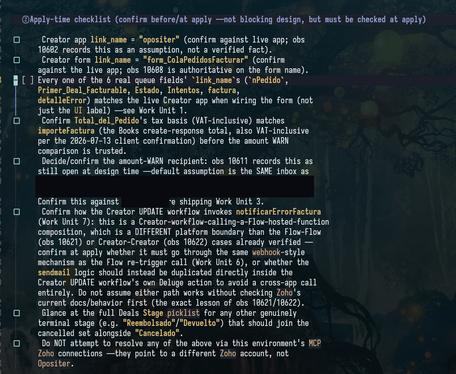
Fuente · SDD Apply · Core · fase canónica 7/9.
SDD / Verify · prueba independiente
«Claudito dice que está»
no es un test.
SDD Verify contrasta implementación con specs, diseño, tareas y progreso; ejecuta pruebas relevantes.
Matriz del ejemplo
Datos inválidos → rechazo esperado.
Dos peticiones → un borrador.
Sin permiso → sin creación.
Timeout → estado incierto, no éxito inventado.
Cada escenario apunta a evidencia ejecutada; lo no probado queda UNTESTED.
Output, valor y razón
verify-report.md, evidencias y veredicto PASS / PASS WITH WARNINGS / FAIL.
Existe para no confundir inspección estática con comportamiento demostrado. No arregla problemas durante la verificación; los devuelve para corregir y volver a comprobar.
Fuente · SDD Verify · Core · fase canónica 8/9.
SDD / Archive · cerrar sin perder el porqué
La próxima sesión
no empieza de cero.
SDD Archive consolida conocimiento del cambio y, en modo de archivos, integra los deltas en specs principales.
Lo que conservamos
Reglas de facturación acordadas, porqué de la conciliación, decisiones y pruebas. Así el próximo cambio sabe qué debe respetar.
Output: archive-report; OpenSpec conserva la topología del cambio en archivo fechado, Hive conserva referencias y reporte de cierre lógico.
Valor y razón de diseño
Convierte la entrega en contexto durable, no en chat perdido. Exige tareas completas, progreso coherente y verificación vigente sin críticos pendientes.
No archiva «aunque falte un poquito». En hybrid exige ambos lados coherentes, sin prometer atomicidad distribuida; none solo cierra inline.
Fuente · SDD Archive · Core · fase canónica 9/9.
Entregas pequeñas / El reviewer también tiene batería
«Estoy cansado, jefe».
Claudito: toma 1.000 líneas.
El agente puede escribir más rápido de lo que una persona cansada puede revisar. El cuello de botella es entender y contrastar el cambio, no producir líneas.
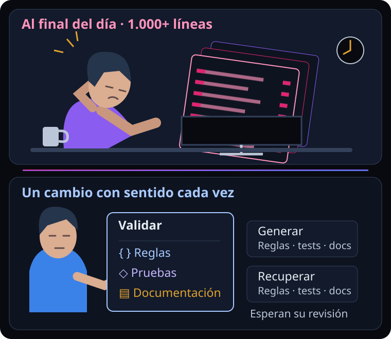
Mejor: unidades con sentido
- Validar: reglas, rechazos, tests y documentación de datos.
- Generar: borrador/cálculo acordado, tests y contrato.
- Recuperar: duplicados, timeout y conciliación, pruebas y guía de fallos.
- Integrar: acción y permisos CRM, pruebas de extremo a extremo y uso.
No «las primeras 250 líneas». Comportamiento + tests + docs que se pueden entender juntos.
Las dependencias indican el orden; revisión humana y pruebas siguen siendo necesarias. Una unidad pequeña no garantiza calidad: permite examinarla mejor.
Skills / Continuidad
Hive Memory:
guardar razones, no ruido.
Protocolo para registrar decisiones, buscar contexto y cerrar sesiones con conocimiento recuperable.
Guardar el porqué
Al trabajar con un Quote de Zoho CRM, dejamos registrada la decisión: «Usamos invokeurl porque, en este caso, la integration task no devolvía correctamente las líneas».
Conservar el contexto y los archivos afectados permite entender la elección más adelante. No es una limitación universal de la API.
Recuperarlo sin arqueología
En otra sesión preguntas: «¿Por qué usamos invokeurl para este Quote?». El agente busca en Hive y recupera la razón registrada, sin que tengas que localizar la nota a mano.
Ejemplo de registro y recuperación: solo puede recuperar lo que se haya guardado; si faltan datos o hay ambigüedad, lo señala.
Fuente · Hive Memory · Core.
Skills / Apoyo a la entrega
Del cambio terminado
a la revisión del equipo.
Código, pruebas y documentación viajan juntos: commits con sentido, una PR que se entiende y una persona que puede revisarla.
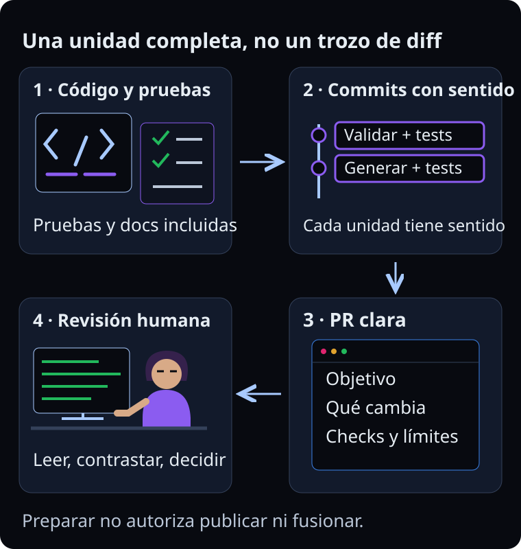
Las skills de Git, unidades de trabajo y preparación de PRs ayudan a ordenar y explicar el cambio; las PRs encadenadas mantienen visibles sus dependencias. Hacer commit, publicar o fusionar requiere la autorización que corresponda: la ayuda del agente no la sustituye.
Skills / Revisión adversarial explícita
Judgment Day:
dos miradas, sin copiarse.
Bajo petición expresa, lanza dos revisores ciegos con el mismo objetivo y criterios.
Qué aporta · ejemplo
Revisar la recuperación tras timeout: un juez mira consistencia, otro también recibe el mismo contrato sin conocer su conclusión.
Los resultados se clasifican en confirmados, sospechosos o contradicciones.
Por qué existe
Sus reglas evitan una falsa unanimidad y obligan a re-juzgar tras correcciones. Pide autorización antes de arreglar hallazgos iniciales y escala si persisten tras dos iteraciones.
No sustituye tests ni aprobación humana, ni se activa porque «suena importante».
Fuente · Judgment Day · Optional.
Skills / Planificar QA a petición
QA Checklist:
¿qué debería probar?
Prepara una batería concreta de checks manuales y recomendaciones automatizadas.
Qué aporta · ejemplo
Factura con datos incompletos, usuario sin permiso, doble clic, redondeo acordado y respuesta externa incierta, cada uno con resultado esperado.
Por qué existe
Sus reglas separan plan de ejecución: un checklist sin ejecutar no es evidencia. Se activa bajo petición y no añade una fase SDD ni reemplaza Verify.
Fuente · QA Checklist · Optional.
Skills / Colaboración sin fricción innecesaria
Comment Writer:
directo no significa borde.
Ayuda a redactar feedback breve, cálido, accionable y con razón técnica.
Qué aporta · ejemplo
«Separaría la conciliación del timeout en otra unidad: mezcla una regla nueva con la UI. Así podremos revisar sus tests sin ruido».
Por qué existe
Sus reglas empiezan por lo útil y evitan recapitulaciones y pile-ons. Una petición clara y su motivo ayudan más que veinte preferencias menores.
El tono y el idioma se ajustan al contexto y a las normas del equipo; el ejemplo usa español de España.
Fuente · Comment Writer · Optional.
Skills / Documentación que se deja leer
Cognitive Doc Design:
respuesta primero, novela después.
Estructura guías y documentos para reducir carga cognitiva mediante bloques y detalle progresivo.
Qué aporta · ejemplo
Guía de facturación: quién puede generar, datos necesarios y camino feliz primero; errores y notas técnicas desplegables después.
Por qué existe
Sus patrones favorecen reconocimiento sobre memoria, señalización y empatía con el reviewer. Una decisión no debería requerir arqueología documental.
Fuente · Cognitive Doc Design · Optional.
Skills / PHP · pruebas con intención
PHPUnit Testing:
un concepto por test.
Patrones Arrange / Act / Assert, factories, aislamiento de base de datos y mocks de servicios externos.
Qué aporta · ejemplo
Preparar oportunidad con factory → generar borrador → comprobar el total acordado. Otro test demuestra que repetir la petición no duplica.
API externa simulada: ninguna factura real de cliente durante el test.
Por qué existe
Sus reglas mantienen casos legibles y datos reproducibles, con efectos externos controlados. Ayudan a detectar qué comportamiento se ha roto sin una aserción de todo a la vez.
Fuente · PHPUnit Testing · Optional · selección PHP.
Skills / Deluge y aplicaciones Zoho
Un lenguaje.
Cada aplicación, su contrato.
Las skills reúnen reglas y referencias para reducir búsquedas repetidas. No sustituyen la documentación oficial ni los datos del entorno real.
Deluge · cómo escribirlo
Sintaxis, tipos, listas y mapas, fechas, validación de valores nulos, errores y uso de invokeurl. Son reglas del lenguaje, no nombres de módulos ni endpoints de una aplicación.
Ejemplo: comprobar que el importe del Quote existe antes de convertirlo y mantener un retorno coherente.
Aplicación · qué llamar
CRM aporta referencias de nombres API de módulos y campos; Books, Creator, Analytics, People y Projects tienen sus propias guías y catálogos de operaciones, integration tasks o endpoints, según el producto.
No todos cubren lo mismo. Las referencias orientan; los nombres, permisos y disponibilidad del entorno deben comprobarse.
Para leer un Quote en Deluge, el agente combina Deluge + CRM: reglas de sintaxis por un lado, campos y operación compatibles por otro. Si faltan hechos, consulta la documentación oficial o pide el dato; no inventa una llamada.
Fuentes empaquetadas · pack Zoho opcional: Deluge · CRM · Books · Creator · Analytics · People · Projects.
Skills / Convertir patrones en instrucciones
Skill Creator:
no otro manual infinito.
Crea contratos LLM-first para comportamientos reutilizables, con triggers y outputs claros.
Qué aporta · ejemplo
Una skill de conciliación de facturas: cuándo cargarla, comprobar antes de reintentar, cuándo parar y qué evidencia devolver. No una instrucción de usar una sola vez.
Por qué existe
Sus reglas exigen frontmatter válido, instrucciones compactas y referencias locales para el detalle. Un trigger reconocible permite cargar el contrato oportuno sin pegar un libro entero.
Fuente · Skill Creator · Optional.
Skills / Mantener contratos de trabajo
Skill Improver:
auditar antes de reescribir.
Revisa triggers, estructura, seguridad, referencias y contrato de salida de una skill existente.
Qué aporta · ejemplo
Detectar que la skill de facturas no explica qué hacer con un timeout: hallazgo con evidencia y propuesta mínima de mejora.
Por qué existe
Su modo por defecto es audit-only y exige aprobación explícita para editar. Protege instrucciones del usuario de cambios «porque me parecían mejores» y evita motores de reescritura en segundo plano.
Fuente · Skill Improver · Optional.
Skills / Descubrir y delegar con contexto exacto
Skill Registry:
una dirección, no «busca por ahí».
Construye el índice de skills y convenciones del proyecto con rutas exactas a cada SKILL.md.
Qué aporta · ejemplo
Para delegar una integración CRM→Books en Deluge, resolver e inyectar las tres rutas de skills aplicables; el ejecutor las lee antes de trabajar.
La copia de proyecto tiene preferencia sobre otra global duplicada.
Por qué existe
Su diseño index-first/path-first evita redescubrir el catálogo en cada delegación. Siempre escribe .jarvis/skill-registry.md; persiste además en Hive si está disponible.
Los compact rules orientan compatibilidad; las rutas exactas son el contrato runtime. El índice es caché local, gitignored por defecto.
Fuente · Skill Registry · Optional.
Experiencia / Uso mientras lo desarrollamos
Dos meses de beta.
Proyectos reales, contexto real.
Dos compañeros hemos probado el ecosistema durante dos meses en proyectos reales, mientras lo desarrollábamos. En nuestra experiencia, funciona.
Nos sirve para recuperar decisiones y trabajar con alcance, pruebas y cambios revisables. Es nuestra experiencia de uso, no una medición de productividad ni una garantía para todos los proyectos.